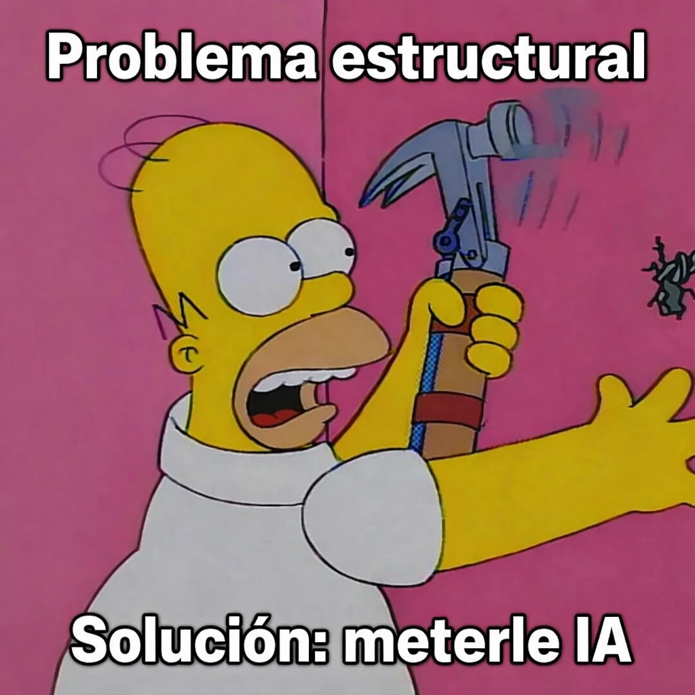

estrategIA #124 ·
El martillo de la IA
El contexto
Homer intenta arreglar una pared con una solución tan contundente como poco precisa. En la edición dedicada a Los Simpson, la imagen cuestiona la costumbre de añadir IA a un problema sin examinar antes sus causas.
Publicado en: estrategIA #124 — Máscaras, dónuts y algoritmos: la IA bajo la lupa de Los Simpson
Leer el texto de la imagen
Problema estructural Solución: meterle IA